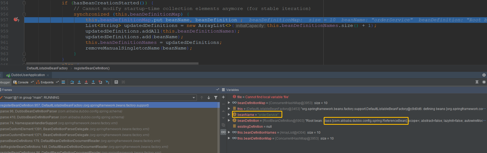

前言
最近一直在看dubbo的源码部分。在阅读的时候，需要有一个入手点，才能一点一点的进行下去。自己在研究的时候，发现思绪比较乱，于是就以芋道源码为基础，一点一点的啃食。芋道源码是直接从dubbo的配置和一些核心的API开始讲起，是从dubbo已经启动的过程作为开始节点，而这些核心 API 与 Spring 的之间的关系被省略了，这些东西对我来说属于前置的知识点，所以花了比较长的时间又从 Dubbo 的核心 API 倒着往前看。
在阅读 Dubbo 时，发现前置知识越来越多，如：Spring 的 refresh 中的一些核心点，Spring 中 bean 的生命周期，BeanFactory 与 FactoryBean 的区别等。所以这些前置知识花了特别多的时间去补。所幸，虽然补前置知识虽然时间长，但是性价比还是可以的。Dubbo 是依赖于Spring 的上下文环境的框架，其他依赖于 Spring 的框架也是相同的道理。Spring 的一些对外的扩展点，读过之后也会心中有数。
关于本篇
1、本篇主要是描述了 Dubbo 在 Spring 创建上下文的时候，是如何从创建，到能完整提供一个RPC调用能力的一些相关点。
2、由于源码比较多，直接贴断点也太过臃肿，所以仅仅贴一些关键点来概括整个流程。
3、本文是依赖于前面的 dubbo 项目进行断点分析，项目结构可以参照这里。项目中 dubbo 的配置方式是 xml 文件，所以本篇主要说 xml 配置方式。其他方式道理相同，并不是问题的关键点。
4、项目启动的是 dubbo-user 服务，所以 UserService 为 dubbo:service，OrderService 为 dubbo:reference。
一、简要核心流程
下图为Spring 启动时是如何加载 Dubbo 的，其中省略了大量过程，只保留了一些关键节点，省略的部分可以略微脑补一下。

二、关键点祥述
整个流程的入口是 Spring 的 refresh 方法。每个方法都有比较深的调用栈。与 Dubbo 有关的入口是 refresh 中的 invokeBeanFactoryPostProcessors 方法
2.1 invokeBeanFactoryPostProcessors
这个方法是执行 beanFactory 的一些后处理操作，其核心流程为在Spring容器中找出实现了BeanFactoryPostProcessor接口的processor并执行。Spring容器会委托给PostProcessorRegistrationDelegate的invokeBeanFactoryPostProcessors方法执行。
ConfigurationClassPostProcessor 是比较核心的类，在这里我们关注一下这个类。它的作用是对项目中配置的类进行处理。具体处理可以分为几步：
- 通过 parser 加载所有的 bean 信息，此处会将使用注解方式的 bean 注册到 beanDefinition
- 通过 reader 读取 xml 的方式，将解析的 bean 注册到 beanDefinition
2.1.1 加载所有的 bean 信息
在加载类信息时，spring 会去用各种方式扫到注册的 bean 信息。我们在 spring 中注册的 bean，逃不出这个方法的扫描方式。 核心方法是:
org.springframework.context.annotation.ConfigurationClassParser#doProcessConfigurationClass
扫描之后，会将扫描到的 bean 注册到 beanDefinitionMap 中
2.1.2 加载 beanDefinition
由于调用栈比较深，可以对照文章一开头的图，跟下断点理解。
核心的方法为 org.springframework.context.annotation.ConfigurationClassBeanDefinitionReader#loadBeanDefinitions。方法中会解析 xml 文件，并将解析出来的 bean 注册到 beanDefinitionMap 中。
此处是个关键点，由于我们项目是使用 xml 的方式去配置 Dubbo ，所以此处是 Dubbo 与 Spring 的接壤的入口。这里我们详细描述一下。
首先是此处 org.springframework.beans.factory.xml.DefaultBeanDefinitionDocumentReader#parseBeanDefinitions，可以看出方法会以配置文件根节点起，遍历所有子节点。
1 | /** |
其次是这里 org.springframework.beans.factory.xml.BeanDefinitionParserDelegate#parseCustomElement(org.w3c.dom.Element, org.springframework.beans.factory.config.BeanDefinition)， 此方法会通过解析出来的节点，获取对应的 Spring 的 namespaceUri ，进而获取对应的配置文件处理器。
此处 ele 参数实际值为 <dubbo:service … />，namespaceUri 为 http://code.alibabatech.com/schema/dubbo
1 |
|
我们看一下 resolve 方法中的细节。因为这个方法内部才是 Dubbo 依赖于 Spring 的关键点。
1 | public NamespaceHandler resolve(String namespaceUri) { |
此处的 NamespaceHandler 为 DubboNamespaceHandler，再创建结束之后，进行 init 初始化。
1 | public class DubboNamespaceHandler extends NamespaceHandlerSupport { |
可以看到，DubboNamespaceHandler 在初始化的时候，会创建所有 dubbo 标签对应的Config 类的 DubboBeanDefinitionParser。并将 DubboBeanDefinitionParser 和 对应的 dubbo 标签类注册到 NamespaceHandlerSupport 的 parsers 中。
- 如：dubbo:registry，对应 beanClass 为 RegistryConfig 的 DubboBeanDefinitionParser
- 如：dubbo:service，对应 beanClass 为 ServiceBean 的 DubboBeanDefinitionParser
- 如：dubbo:reference，对应 beanClass 为 ReferenceBean 的 DubboBeanDefinitionParser
最后，会在 com.alibaba.dubbo.config.spring.schema.DubboBeanDefinitionParser#parse(org.w3c.dom.Element, org.springframework.beans.factory.xml.ParserContext, java.lang.Class<?>, boolean) 方法中进行处理
1 | private static BeanDefinition parse(Element element, ParserContext parserContext, Class<?> beanClass, boolean required) { |
2.1.3 Dubbo 的 beanDefinition 特殊之处
Dubbo 服务比较特殊，beanDefinition 跟普通的 bean 不太一样。在向 beanDefinitionMap 注册时，普通的 beanDefinition 的 beanName 与 beanClass 是对应的；而 dubbo 服务的 beanDefinition 的 beanName 是dubbo 服务的名称，beanClass 为 dubbo 对应的 Bean。
普通的 beanDefinition：

dubbo 引用的服务的 beanDefinition：

2.2 registerListeners
这一步的核心流程是从 beanFactory 中获取所有的 ApplicationListener，然后注册到监听器集合中。它的关键点其实是 ServiceBean。因为 ServiceBean 是 ApplicationListener 的实现。
1 | public class ServiceBean<T> extends ServiceConfig<T> implements InitializingBean, DisposableBean, ApplicationContextAware, |
所以 beanFactory 中 ServiceBean 也会被注册到监听器集合中。项目中的 ServiceBean 的 beanClass 实际是 UserService。
2.3 finishBeanFactoryInitialization
这一步的核心点，主要是创建剩余的各类对象，并将其保存到 singletonObjects 中。其中关联的前置知识为Spring 中 bean 的生命周期。它的核心方法是：
org.springframework.beans.factory.support.AbstractAutowireCapableBeanFactory#doCreateBean
1 | protected Object doCreateBean(final String beanName, final RootBeanDefinition mbd, final @Nullable Object[] args) |
它的具体流程为：
- 遍历 beanDefinitionNames org.springframework.beans.factory.support.AbstractAutowireCapableBeanFactory#resolveBeforeInstantiation —— 执行 InstantiationAwareBeanPostProcessorAdapter 实例化对象前操作
- createBeanInstance 实例化bean（默认无参构造）
- populateBean 填充bean
- 执行 InstantiationAwareBeanPostProcessorAdapter 的设置属性方法和实例化后方法
- 得到所有的 InstantiationAwareBeanPostProcessor，遍历执行 postProcessProperties 方法
- 通过反射获取 @Resource 修饰的属性（org.springframework.context.annotation.CommonAnnotationBeanPostProcessor#buildResourceMetadata），然后还是通过getBean获取到对象，然后进行注入
- initializeBean 初始化bean
- BeanNameAware 的 setBeanName
- BeanFactoryAware 的 setBeanFactory
- ApplicationContextAware 的 setApplicationContext
- InstantiationAwareBeanPostProcessorAdapter 的 postProcessBeforeInitialization
- InstantiationAwareBeanPostProcessorAdapter 的 postProcessAfterInitialization
- 添加到 singletonObjects
ps：此处并不是只有这一步才会跟 bean 生命周期相关，bean 生命周期贯穿在 refresh 的很多流程中，只要执行doGetBean 方法，都会走这个流程。此处仅仅借楼关联一下。
2.4 finishRefresh
这一步的核心点，是通知所有的监听器上下文刷新结束的事件。在这一步执行时，会通知到 ServiceBean。
1 | public void onApplicationEvent(ContextRefreshedEvent event) { |
此处暴露的是 UserService。
三、总结
Dubbo 的启动条件是完全依赖于 Spring 的启动流程，Spring 的启动流程中核心的点是 refresh 方法。所以只要搞懂 refresh 方法，其他的拓展框架流程也会明白。只不过关联的知识点太多了，还是需要时间的积累才能一点一点的搞懂。
如果本篇有描述不清，或者描述有误的地方，还望在下方留言，大家一起交流，一起学习，一起进步~